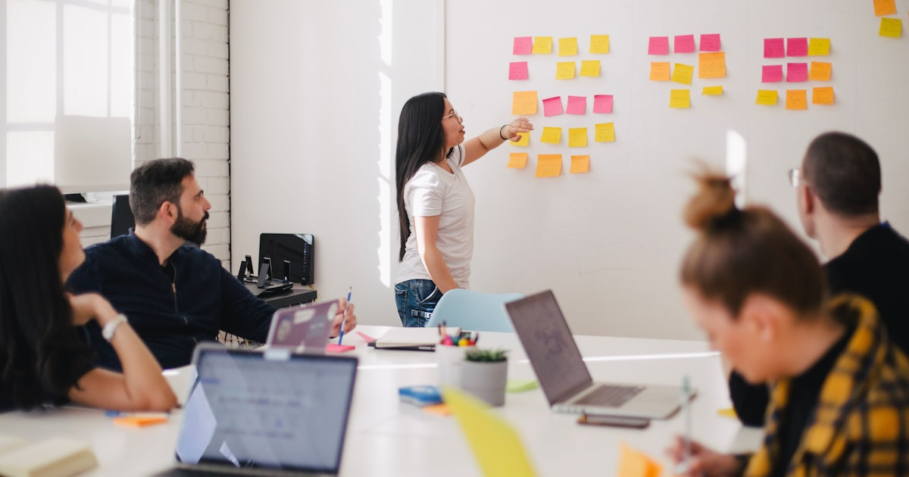

AR
Artikel
Catatan lapangan tentang AI dan teknologi — ditulis dari sisi orang yang membangun. Apa yang gagal, apa yang berhasil, tanpa teori kosong.
/01
Menjalankan Proyek Coding dengan Banyak AI Agent Sekaligus
Kanban board, worker AI, pembagian peran — bagaimana satu orang mengorkestrasi beberapa AI agent tanpa kacau. Pengalaman nyata, bukan teori.
 /03
Otomasi WhatsApp dari Nol Sampai Dipakai
Studi kasus bot PPOB: dari ide, spike pertama, sampai bot yang dipakai transaksi nyata — dengan keputusan teknis dan trade-off di tiap tahap.
/03
Otomasi WhatsApp dari Nol Sampai Dipakai
Studi kasus bot PPOB: dari ide, spike pertama, sampai bot yang dipakai transaksi nyata — dengan keputusan teknis dan trade-off di tiap tahap.


/02 Homelab untuk AI: Apa yang Bisa, Apa yang Tidak CPU tanpa AVX2, RAM 1GB, dan keterbatasan lain — pelajaran nyata soal batas hardware murah ketika menjalankan tooling AI modern, dan kapan harus menyerah ke VPS.
/03
Otomasi WhatsApp dari Nol Sampai Dipakai
Studi kasus bot PPOB: dari ide, spike pertama, sampai bot yang dipakai transaksi nyata — dengan keputusan teknis dan trade-off di tiap tahap.